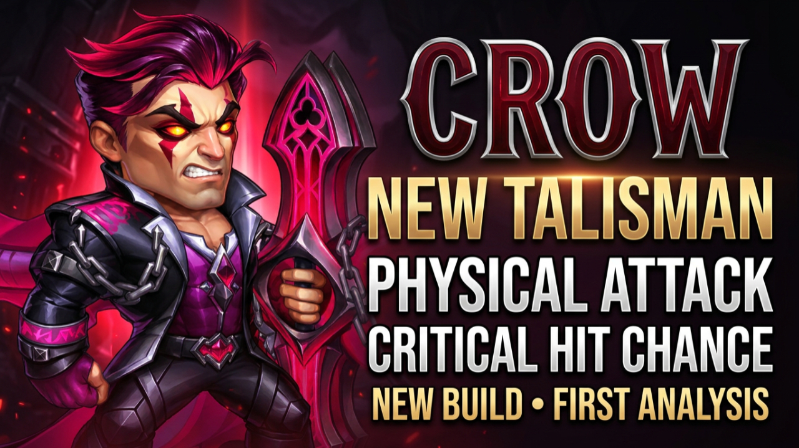

Physical Attack, Physical Critical Hit Chance and two new skins open
a more aggressive development direction for Crow.

Crow is getting a second Talisman alongside two new skins during this
season. For a relatively recent Honor hero who has already demonstrated
his potential, these upgrades create an interesting question: how much
more dangerous can Crow become when his build shifts toward offense?
What's New?
Physical AttackNew Talisman
Physical Critical Hit ChanceNew Talisman
Ocean EchoNew Skin
Arbiter of JusticeNew Skin
Crow's Identity Starts With Silence
Crow is an Honor hero whose identity revolves around disrupting
magic-dependent opponents through Silence while continuing to deal
physical damage himself.
That combination allows him to interfere with enemy abilities while
maintaining offensive pressure. But Silence does not make every
opponent helpless. Physical attackers can still fight, and the enemy
composition still matters.
Crow therefore needs a team that helps him survive and take advantage
of the control windows his kit creates.
First Talisman vs New Talisman
Crow's two Talisman options appear to push his build in different
directions: one provides a more balanced defensive foundation, while
the new option increases his offensive potential.
FIRST TALISMAN
Talisman of Deduction
Main StatAgility
Additional StatArmor
Agility gives Crow a balanced foundation for his offense and
defense, while Armor helps him withstand incoming physical damage.
For a Control hero, surviving longer can create more opportunities
to disrupt the enemy. This makes his first Talisman particularly
relevant when physical pressure threatens to remove Crow too early.
NEW TALISMAN
More Aggressive Direction
StatPhysical Attack
StatPhysical Critical Hit Chance
Physical Attack strengthens Crow's offensive foundation, while
Physical Critical Hit Chance introduces the possibility of critical
physical attacks and additional damage spikes.
The trade-off is important: Crow gains more offensive potential
while moving away from the defensive benefits offered by his first
Talisman.
The new Talisman changes Crow's stats. The available information does
not indicate a new Silence mechanic or an increase to his Silence
duration.
What Could the New Talisman Change?
More Offensive Pressure
Crow can already disrupt opponents while dealing physical damage.
Increasing Physical Attack gives him a stronger offensive
foundation during those existing control windows.
Critical Damage Potential
Physical Critical Hit Chance creates the possibility of larger
physical damage spikes. The important question is how consistently
that additional offensive potential affects real battles.
Less Defensive Support
Choosing the new Talisman means moving away from the Agility and
Armor combination of Talisman of Deduction. Team support and
survivability could therefore become even more important.
Battle Testing Is Required
The real test is whether the additional offensive potential helps
Crow secure important eliminations while his team provides enough
protection to keep him active.
Two New Crow Skins
The new Talisman is only part of Crow's upcoming development. During
this season, he also receives Ocean Echo and Arbiter of Justice.
Ocean Echo
Ocean Echo adds Physical Attack, further strengthening Crow's
offensive foundation.
Preview shown: +7,095 Physical Attack at maximum level
Arbiter of Justice
Arbiter of Justice adds Crushing. Crushing increases damage
against opponents with low Health, giving Crow another way to
pressure enemies that are already close to falling.
Stat: Crushing
A More Aggressive Crow?
Crow already has skins for Agility, Health and Armor Penetration.
Ocean Echo now adds Physical Attack, while Arbiter of Justice adds
Crushing.
Combined with the second Talisman, these upgrades potentially support
several different stages of the fight: a stronger offensive
foundation, the possibility of critical physical attacks, and
additional pressure against enemies whose Health is already low.
On paper, that could make Crow more dangerous at converting his
control windows into eliminations. Whether that happens reliably in
battle still needs to be tested.
First Analysis — Not the Final Verdict
This is a preview of Crow's upcoming development options, not a final
recommendation between his two Talismans.
Talisman of Deduction offers the more defensive balance through
Agility and Armor. The second Talisman opens a more aggressive path
through Physical Attack and Physical Critical Hit Chance.
Choosing between them should ultimately depend on the fight, Crow's
survivability and the support provided by the rest of the team.
Once the new Talisman becomes available for testing, Gods of Alliance
will compare both options directly and examine where the new skins
make the biggest difference.
Watch the Crow New Talisman Preview
Watch the full Gods of Alliance analysis of Crow's second Talisman,
his new Physical Attack and Crushing skins, and what these upgrades
could mean for his future builds.